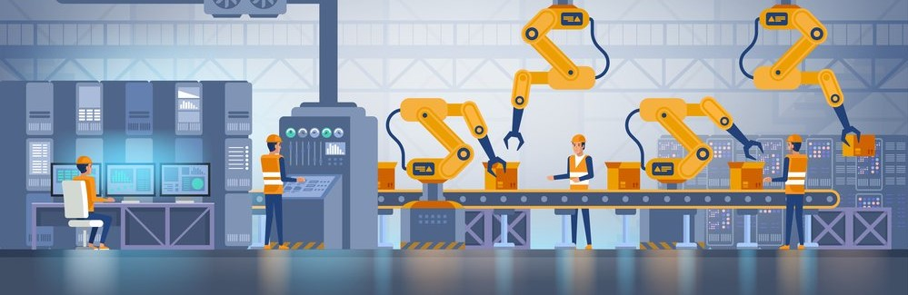

Naam: Jan-Willem Arendsen, Datum: 25-09-2020
Mijn naam is Jan-Willem Arendsen en volg de opleiding Technisch Bedrijfskunde aan het Saxion in Deventer. Op dit moment zit ik in het derde leerjaar en volg de Minor Smart Industry aan de HAN. Voor de opleiding Smart Start is er een literatuuronderzoek gedaan over de processen van Smart Industry. Hierbij is er gekeken welke belangrijke succesfactoren er zijn hiervoor. Hierbij worden de Smart Manufacturing technologieën uitgelegd. Vervolgens worden belangrijke hulpmiddelen bij Smart Manufacturing uitgelegd.
De zoekstrategieën die gebruikt is om aan de informatie te komen is, dat er op verschillende sites gezocht is, zoals Google Scholar en Science Direct. Voor het zoeken naar informatie zijn er eerst een aantal zoektermen opgeschreven. Vervolgens is er naar de genoteerde zoektermen gezocht. Tijdens het zoeken is er rekening gehouden met de actualiteit en de betrouwbaarheid van bronnen.
De gevonden bronnen zijn beoordeeld aan de hand van een formulier voor het beoordelen van de gevonden literatuur dat bij het Saxion gebruikt wordt om bronnen te beoordelen. In dit document is eerst beschreven wat er gezocht moet worden, met daarbij relevante zoektermen. Vervolgens zijn alle gevonden bronnen vermeld en is er per bron beschreven of deze actueel, betrouwbaar, relevant, objectief en nauwkeurig is. Wanneer de gevonden literatuur geen rare uitslagen geeft bij het controleren hiervan, kan de bron gebruikt worden. De goedgekeurde bronnen zijn geanalyseerd, door globaal te kijken waar nuttige informatie staat. Deze nuttige informatie is in eigen woorden opgeschreven, waarna er vervolgens de data samengevat is tot relevante informatie.
Stijn heeft mijn werk gecontroleerd. Hij vond het een uitgebreid onderzoek, maar hij miste iets aan het eind. Geadviseerd werd om een conclusie te schrijven aan het einde, omdat het nu breed eindigt. Een korte conclusie met de punten die beschreven zijn in tekst.
De meeste Advanced Manufacturing technologieën zijn niet nieuw, maar recente vormen van integratie, verbeteringen in gebruik en het samen gebruiken, waardoor het digitale productieveld geheel verandert en nieuwe uitdagingen en kansen ontstaan, wat Smart Manufacturing genoemd wordt. Geïsoleerde cellen komen samen als een volledig geïntegreerde, geautomatiseerde en geoptimaliseerde productiestroom, wat leidt tot grotere efficiëntie en veranderende traditionele productierelaties tussen leveranciers, producenten en klanten (Da Silva, Shinohara, Nielsen, De Lima, & Angelis, 2020). Smart-manufacturing-technologieën vormen de kern van het Industrie 4.0 concept en vormen de pilaren van de interne operationele activiteiten. Smart Manufacturing denkt na over technologieën voor het productiesysteem. Men gaat er vanuit dat Smart Manufacturing het eerste doel van Industrie 4.0 is (Frank, Dalenogare, & Ayala, 2019).
De technologieën van Smart Manufacturing kunnen volgens Frank, Dalenogare, & Ayala, onderverdeeld worden in zes hoofddoelen, namelijk: verticale integratie (1), virtualisatie (2), automatisering (3), traceerbaarheid (4), flexibiliteit (5) en energiebeheer (6) (Frank, Dalenogare, & Ayala, 2019). Daarnaast voegt Da Silva, Shinohara, Nielsen, De Lima, & Angelis Augmented Reality (7) toe aan de technologieën en benoemd Cloud Computing, Internet of Things, Data-analyse en Cyber Security als belangrijke hulpmiddelen bij Smart Manufacturing (Da Silva, Shinohara, Nielsen, De Lima, & Angelis, 2020).
De verticale integratie omvat geavanceerde ICT-systemen die alle hiërarchische niveaus van het bedrijf integreren, waardoor de besluitvorming minder afhankelijk is van omslachtige communicatie. Om tot verticale integratie te komen, is de eerste stap om alles fysieke objecten, sensoren, actuatoren en Programmable Logic Controllers (PLC) te digitaliseren. Wanneer alle systemen geïntegreerd zijn met elkaar, stroomt de informatie van productieorders ook op de omgekeerde manier, wat helpt om de bedrijfsmiddelen in te zetten in productieorders. Verticale integratie zorgt voor meer transparantie en controle over het productieproces en helpt om het besluitvormingsproces op de werkvloer te verbeteren (Frank, Dalenogare, & Ayala, 2019).
Om het aanpassingsvermogen voor verschillende producten te vergroten, omvat Smart Manufacturing netwerkmachines op de werkvloer, via machine-to-machine communicatie (M2M). M2M bestaat uit een communicatiesysteem met interoperabiliteit, waardoor machines elkaar kunnen begrijpen en gemakkelijker kunnen worden aangepast in productielijnen. Deze mogelijkheid wordt ondersteund door virtuele inbedrijfstelling. (Frank, Dalenogare, & Ayala, 2019). Simulatie vormt een kernfunctie in Digital Manufacturing, aangezien het experimenten en validatie van verschillende scenario’s en configuraties voor bestaande en nieuwe productiemiddelen en -systemen ondersteunt. In een volledig geïntegreerde Digital Manufacturingwereld wordt het product, de fabricageprocessen en het gebruik allemaal ontwikkeld en gesimuleerd in een digitale omgeving, voordat het product op de markt komt. Dit scheelt veel tijd en geld in de ontwikkeling van nieuwe producten, resulterend in producten van hogere kwaliteit en lagere kosten. Daarnaast kan een Real-time scenario-analyse het mogelijk maken om de doelstellingen en de keuze van middelen voor producten en processen te verbeteren. Hierdoor kunnen dynamische besluitvormingsmechanismen gemaakt worden, over bijvoorbeeld de procesplanning (Da Silva, Shinohara, Nielsen, De Lima, & Angelis, 2020).
Smart manufacturing promoot ook de verbeterde automatisering. Robots kunnen tegenwoordig taken nauwkeuriger uitvoeren. Kunstmatige Intelligentie kan Smart Manufacturing op veel manieren ondersteunen, zoals het analyseren van gegevens die via sensoren verzameld zijn, om machinestoringen, overbelasting of andere problemen te bewaken en te voorspellen (Frank, Dalenogare, & Ayala, 2019). De laatste jaren is er een toename van autonome robots die worden geprogrammeerd met Augmented Reality (AR) om hun omgeving te herkennen, ervan te leren en onafhankelijk beslissingen te nemen. De belangrijkste rol van autonome robots in Digital Manufacturing is het ondersteunen van het ontwerp en de simulatie van autonome of hybride werkstations (Da Silva, Shinohara, Nielsen, De Lima, & Angelis, 2020). Ook kan Kunstmatige intelligentie automatische productafwijkingen identificeren in een eerdere stadia van het productieproces, waardoor de kwaliteitscontrole toeneemt en de productiekosten verlaagd worden en kan het helpen met het voorspellen van de productievraag op de lange termijn en deze omzetten in dagelijkse productieorders (Frank, Dalenogare, & Ayala, 2019)
Voor de interne traceerbaarheid worden sensoren toegevoegd in grondstoffen en eindproducten in het magazijn van de fabriek. Dit zorgt voor een geoptimaliseerd voorraadbeheer en biedt ondersteuning bij terugroepacties door identificatie van specifieke componenten in batches van gereed product. Ook kan interne traceerbaarheid ondersteuning bieden aan aanpasbare systemen met flexibele lijnen, waarin machines de producteisen lezen die erin zijn vastgezet en de nodige acties uitvoeren om ze te vaardigen. Flexibele lijnen kunnen ook modulaire machines omvatten die gemakkelijk in een productielijn kunnen worden gestoken met een minimale omsteltijd. Dit maakt de productie van verschillende soorten producten in kleine batches mogelijk, met minimaal productieverlies.
Bovendien is additive manufacturing een veelbelovende technologie van Industrie 4.0 om producten op maat te maken. Additive manufacturing maakt gebruik van 3D-printen van digitale modellen, die kunnen worden aangepast, waarbij dezelfde middelen worden gebruikt om verschillende goederen te vervaardigen. Additive manufacturing bevordert ook een duurzame productie, omdat er maar één proces nodig is dat minder afval genereert dan bij de traditionele productie. Voor grootschalige producties is het gebruik van additive manufacturing echter beperkt vanwege de lage doorvoersnelheid (Frank, Dalenogare, & Ayala, 2019). Dit maakt wel Flexible Manufacturing mogelijk. Volgens Koole en Bekker zijn Flexible Manufacturing systems, systemen met niet of nauwelijks omsteltijden. Flexible Manufacturing is duurder, maar omdat dit erg flexibel is, met lage doorlooptijden voor de hele keten, wordt dit terugverdiend (Koole & Bekker, 2013). Op dit moment is de belangrijkste rol van Additive Manufacturing in Digital Manufacturing het bieden van een snelle en goedkopere manier om prototypes te maken voor fysieke simulatie. Prototypes kunnen met precisie worden geprint en vervolgens kunnen aanpassingen worden voorgesteld die later op de fabricage-assemblage zouden worden opgemerkt. Dit bespaart tijd en kosten om een nieuw model te ontwikkelen (Da Silva, Shinohara, Nielsen, De Lima, & Angelis, 2020).
Om de efficiëntie van de fabriek te verbeteren, omvat Smart Manufacturing ook het energiebeheer. Hiermee wordt het bewaken en verbeteren van de energie-efficiëntie bedoeld. Efficiëntiemonitoring is gebaseerd op het verzamelen van gegevens over het energieverbruik in elektriciteitsnetten, terwijl de verbetering ervan wordt bereikt door intelligente systemen voor energiebeheer die intensieve productiefasen plannen op het moment dat de elektriciteitstarief gunstig is (Frank, Dalenogare, & Ayala, 2019).
Augmented Reality (AR) is een technologie waarmee virtuele informatie op de echte wereld kan worden gelegd. Dit maakt gebruikers gebaseerde interactie mogelijk, waardoor virtuele informatie wordt weergegeven in een echte omgeving. De toepassing van AR kan in twee hoofdvormen worden opgedeeld. Ten eerste is AR een middel waarmee ideeën worden geproduceerd en gemodelleerd. Ten tweede, omdat AR de visualisatie ondersteund, wat al digitaal geproduceerd is. Toepassingen voor training, implementatie en operationalisering van processen zijn hier voorbeelden van. De belangrijkste rol van AR in Digital Manufacturing is om virtuele informatie in de echte wereld te bieden, waardoor snelle, geïntegreerde en nauwkeurige besluitvorming mogelijk is (Da Silva, Shinohara, Nielsen, De Lima, & Angelis, 2020).
De opkomst van Cloud Computing betekent een fundamentele verandering in de manier waarop IT-services worden ontwikkeld, geïmplementeerd, geschaald, bijgewerkt, onderhouden en betaald. Cloud Computing is een computingstijl waarbij de schaalbare en elastische IT-gerelateerde mogelijkheden worden aangeboden als een dienst aan externe klanten die internettechnologieën gebruiken. Zo kunnen productiebedrijven kosten besparen en IT-afdelingen vrijmaken om zich te concentreren op strategische projecten in plaats van op dagelijkse activiteiten. Dit soort services uitbesteden zijn mogelijke oplossingen voor enkele problemen die zich voordoen bij het juist gebruik van Digital Manufacturing. Het gebruik van Digital Manufacturing vereist een robuuste gegevensinfrastructuur met betrekking tot gegevensopslag, gegevensoverdracht en gegevensverwerking om het verlies aan productiviteit te beperken. Het bieden van voldoende infrastructuur is belangrijk voor een effectief gebruik van Digital Manufacturing. De Cloud is een geschikte technologische oplossing. De belangrijkste rol van Cloud-technologie in Digital Manufacturing is het verzamelen, verwerken, behandelen en benaderen van gegevens op een geïntegreerde manier continue mogelijk te maken (Da Silva, Shinohara, Nielsen, De Lima, & Angelis, 2020).
Internet of Things (IoT) is een sleutelelement om Digital Manufacturing waardevoller te maken (Da Silva, Shinohara, Nielsen, De Lima, & Angelis, 2020). IoT vertegenwoordigt de integratie van sensoren en computers in een internetomgeving via draadloze communicatie (Frank, Dalenogare, & Ayala, 2019). De mogelijkheid om real-time gegevens van machines, apparatuur en processen te verkrijgen, opent nieuwe analytische mogelijkheden en snelle verspreiding van resultaten, en ondersteunt zo de besluitvormingsprocessen. Twee toepassingen waar IoT voor gebruikt kan worden binnen Digital Manufacturing. De eerste toepassing is om een volledige proces- en materiaalsynchronisatie mogelijk te maken. Ten tweede voor voorspellend onderhoud, waarbij apparatuur analyse gebruikt kan worden om voorspellingsnauwkeurigheid te waarborgen (Da Silva, Shinohara, Nielsen, De Lima, & Angelis, 2020).
Veel fabrieken beschikken over veel Real-time data en over de mogelijkheid om geavanceerde statische beoordelingen uit te voeren. Hoe complexer een fabricageproces, des te hoger wordt de waarde van big data en analyses. Deze gegevens kunnen worden gebruikt om trends te voorspellen en te anticiperen op behoeften. Een belangrijke rol van analyses in Digital Manufacturing is het correleren van data om de invloed van bepaalde variabelen in het productiesysteem te bevestigen. Dit helpt bij het modelleren van scenario’s door variabelen die anders onzichtbaar waren te correleren. Het biedt ook voorwaarden voor het analyseren van bestaande patronen om voorspellingen van simulatiemodellen te verbeteren (Da Silva, Shinohara, Nielsen, De Lima, & Angelis, 2020).
Cyber Security is gericht op het waarborgen van de beschikbaarheid, privacy, vertrouwelijkheid en integratie van digitale gegevens die zijn opgeslagen. Naarmate de mate van digitalisering en connectiviteit toeneemt, worden systemen steeds gevoeliger voor beveiligingsproblemen. De belangrijkste rol van Cyber Security bij Digital Manufacturing is om de ontwikkeling, uitwisseling en beheer van alle product-, procesinformatie digitaal te waarborgen op een veilige manier (Da Silva, Shinohara, Nielsen, De Lima, & Angelis, 2020).
Productiebedrijven kunnen zich richten op verschillende behoeften die ze kunnen hebben wanneer ze één van de bovengenoemde Smart Manufacturing-technologieën implementeren. Per branche variëren de voordelen. Bedrijven moeten systematisch nadenken over de implementatie van dergelijke technologieën om een hoger niveau van readiness van Industrie 4.0 te bereiken. Smart Manufacturing-technologieën kunnen met elkaar worden verbonden, om synergie te creëren. Deze synergetische integratie van Smart Manufacturing-technologieën ondersteund door IoT (Internet of Things) resulteert in CPS (Cyber fysieke systemen). Dit is de integratie van de fysieke objecten van de fabriek met de virtuele dimensie van de fabriek, inclusief de geïntegreerde data, AR en simulaties, wat een van de essentiële concepten van Industrie 4.0 is. Dit artikel gaat er vanuit dat de acceptatie van Smart Manufacturing-bedrijven die streven naar een hoger volwassenheidsniveau van Industrie 4.0, de meeste Smart Manufacturing-technologieën systematisch zullen implementeren, aangezien deze technologieën met elkaar verband houden. Daarnaast wordt er ook beweert dat Hoe geavanceerder het bedrijf is in de Smart Manufacturing-technologieën van Industrie 4.0, hoe sterker de aanwezigheid van de basistechnologieën zal zijn (Frank, Dalenogare, & Ayala, 2019).
De meeste Advanced Manufacturing technologieën zijn niet nieuw, maar recente vormen van integratie, verbeteringen in gebruik en het samen gebruiken, waardoor het digitale productieveld geheel verandert en nieuwe uitdagingen en kansen ontstaan, wat Smart Manufacturing genoemd wordt. De technologieën van Smart Manufacturing kunnen onderverdeeld worden in zeven hoofddoelen, namelijk: verticale integratie, virtualisatie, automatisering, traceerbaarheid, flexibiliteit, energiebeheer en Augmented Reality. Belangrijke hulpmiddelen bij deze technologieën van Smart Manufacturing zijn Computing, Internet of Things, Data-analyse en Cyber Security. Productiebedrijven kunnen zich richten op verschillende behoeften die ze kunnen hebben wanneer ze één van de bovengenoemde Smart Manufacturing-technologieën implementeren. Per branche variëren de voordelen. De acceptatie van Smart Manufacturing-bedrijven die streven naar een hoger volwassenheidsniveau van Industrie 4.0, zullen de meeste Smart Manufacturing-technologieën systematisch implementeren. Hoe geavanceerder het bedrijf is in de Smart Manufacturing-technologieën van Industrie 4.0, hoe sterker de aanwezigheid van de basistechnologieën zal zijn.
Da Silva, E. R., Shinohara, A. C., Nielsen, C. P., De Lima, E. P., & Angelis, J. (2020). Operating Digital Manufacturing in Industry 4.0: the role of advanced manufacturing technologies. 53rd CIRP Conference on Manufacturing Systems, 174 - 179. doi:https://doi.org/10.1016/j.procir.2020.04.063 Frank, A. G., Dalenogare, L. S., & Ayala, N. F. (2019). Industry 4.0 technologies: Implementation patterns in manufacturing companies. Interantional Journal of Production Economics, 15 - 26. doi:https://doi.org/10.1016/j.ijpe.2019.01.004 Koole, G., & Bekker, R. (2013). Methoden en modellen voor zorglogistiek. Amsterdam: MG books. Opgeroepen op september 24, 2020
Nadat het artikel geschreven is, is door een klasgenoot doorgelezen. Deze medestudent heeft aan de hand van dit artikel een aantal vragen opgesteld om aan mij te stellen, om zo dieper op het artikel in te gaan. Daarnaast heeft deze persoon tijdens dit interview feedback gegeven over het artikel In het onderstaande filmpje kan het interview geluisterd worden.